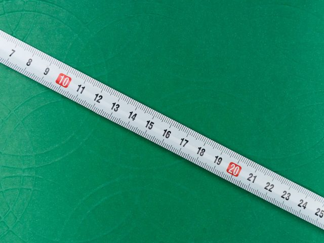
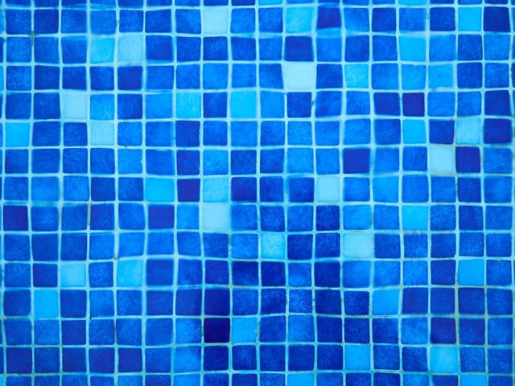
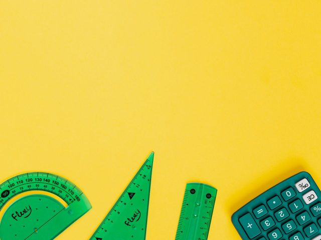
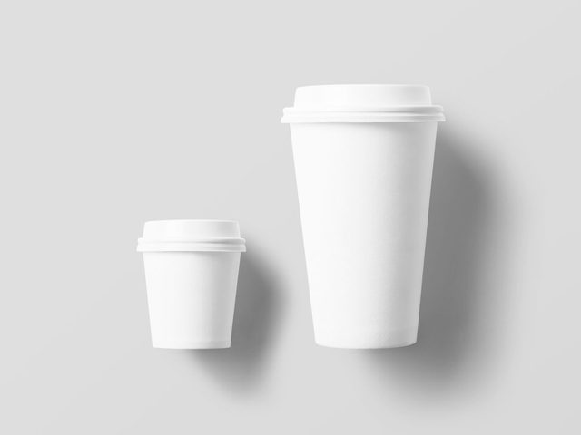

VOCABULARY · 主題 2000 字 UNIT 19
Sizes & measurements．尺寸與測量
長度、重量的單位，形狀，描述大小的形容詞和數量的說法，共 40 個字。注意相反詞、a dozen eggs、a pair of 這類量詞。
共 40 個單字．點 🔊 聽發音

1centimetern.
公分
縮寫 cm；英式 centimetre
My brother is 160 centimeters tall.我哥哥身高 160 公分。
2footn.
呎（約 30 公分）；腳
複數 feet
The wall is ten feet high.這面牆有十呎高。
3gramn.
公克
縮寫 g
This letter weighs 20 grams.這封信重 20 公克。

4inchn.
吋（約 2.5 公分）
複數 inches
My phone screen is six inches.我的手機螢幕是六吋。

5kilogramn.
公斤
縮寫 kg；= kilo；1 kilogram = 1,000 grams
I weigh 45 kilograms.我的體重是 45 公斤。

6milen.
哩（約 1.6 公里）
The beach is two miles away.海灘在兩哩外。

7poundn.
磅（約 454 公克）；英鎊
縮寫 lb
This bag of rice weighs ten pounds.這袋米重十磅。

8circlen./v.
圓圈；圈起來
in a circle 圍成一圈
Let's sit in a circle.我們圍成一圈坐下吧。

9dotn.
小點；圓點
Her dress is red with white dots.她的洋裝是紅底白點的。

10linen.
線；行；隊伍
stand in line 排隊
Please stand in line.請排隊。

11pointn./v.
點；要點；指
point at 用手指著
Don't point at people. It's not polite.不要用手指著別人，不禮貌。

12rown.
（一）排；（一）行
in the first row 在第一排
We sat in the first row.我們坐在第一排。

13shapen.
形狀；外形
in the shape of 形狀像…
The cake is in the shape of a heart.這個蛋糕是心形的。

14squaren./adj.
正方形；廣場；方的
A square has four equal sides.正方形有四個一樣長的邊。

15anglen.
角度；角
Try to take the photo from a different angle.試著從不同的角度拍照。

16bigadj.
大的
big – bigger – biggest（重複 g）
That's a big dog!那是一隻好大的狗！

17deepadj.
深的
名詞 depth
The lake is very deep.這座湖很深。

18faradj./adv.
遠的；遠地
far from 離…很遠
My school is not far from my home.我的學校離我家不遠。

19highadj.
高的
名詞 height；山、牆、價格用 high
The mountain is very high.這座山很高。

20largeadj.
大的
衣服尺寸 L；飲料大杯
I'd like a large cola, please.請給我一杯大杯可樂。

21lightadj./n.
輕的；燈；光
相反詞 heavy
This box is light. I can carry it.這個箱子很輕，我搬得動。
22littleadj.
小的（常帶「可愛」的感覺）
What a cute little puppy!好可愛的小狗！

23longadj.
長的；久的
名詞 length
This bridge is very long.這座橋很長。

24lowadj.
低的
相反詞 high
The chair is too low for me.這張椅子對我來說太低了。

25mediumadj.
中等的；中號的
衣服尺寸 M
I'd like a medium T-shirt.我要一件 M 號的 T 恤。

26shortadj.
短的；矮的
相反詞 long／tall
This pencil is too short to use.這枝鉛筆太短了，不能用。
27smalladj.
小的
衣服尺寸 S
This T-shirt is too small for me.這件 T 恤我穿太小了。

28straightadj./adv.
直的；直直地
go straight 直走
Draw a straight line.畫一條直線。

29wideadj.
寬的
名詞 width
The road is very wide.這條路很寬。

30roundadj.
圓的；球形的
The earth is round.地球是圓的。

31bottlen.
瓶子
a bottle of water 一瓶水
Can I have a bottle of water?可以給我一瓶水嗎？

32cupn.
杯子
a cup of 一杯（熱飲）
Would you like a cup of hot chocolate?你要來杯熱巧克力嗎？

33dozenn.
一打（12 個）
a dozen eggs（不加 of）
Mom bought a dozen eggs.媽媽買了一打雞蛋。

34glassn.
玻璃杯；玻璃
a glass of 一杯（冷飲）；玻璃不可數
She drinks a glass of milk every morning.她每天早上喝一杯牛奶。

35packv./n.
打包；一包
pack your bag 打包行李
Pack your bag tonight. We leave early tomorrow.今晚把行李打包好，我們明天一早出發。

36packagen.
包裹
A package came for you today.今天有你的包裹。

37pairn.
一雙；一對
a pair of shoes 一雙鞋
I need a new pair of shoes.我需要一雙新鞋。

38piecen.
一張；一片；一塊
a piece of paper／cake
Can I have a piece of paper?可以給我一張紙嗎？

39sizen.
尺寸；大小
What size…? 幾號？
What size do you wear?你穿幾號？
40heightn.
高度；身高
high 的名詞
The nurse checked my height and weight.護理師量了我的身高和體重。
FOCUS
長度和重量的單位
| 單位 | 縮寫 | 大約等於 |
|---|---|---|
| centimeter 公分 | cm | 100 cm = 1 公尺 |
| inch 吋 | in. | 2.5 公分 |
| foot 呎（複數 feet） | ft | 12 吋，約 30 公分 |
| mile 哩 | mi | 約 1.6 公里 |
| gram 公克 | g | 1,000 g = 1 kg |
| kilogram 公斤 | kg | 1,000 公克 |
| pound 磅 | lb | 約 454 公克 |
台灣用公分、公斤；美國常用吋、呎、哩、磅。
FOCUS
相反詞和比較級
| 形容詞 | 相反詞 | 比較級 |
|---|---|---|
| big 大的 | small / little | bigger（重複 g） |
| long 長的 | short | longer |
| high 高的 | low | higher |
| wide 寬的 | narrow | wider |
| deep 深的 | shallow | deeper |
| light 輕的 | heavy | lighter |
| far 遠的 | near | farther |
little 也是「小的」，但常帶有「可愛」的感覺：a cute little puppy。
FOCUS
數量的說法
| 說法 | 中文 |
|---|---|
| a dozen eggs | 一打雞蛋（dozen 後面不加 of） |
| a pair of shoes / socks | 一雙鞋／襪子 |
| a piece of paper / cake | 一張紙／一塊蛋糕 |
| a bottle of water | 一瓶水 |
| a cup of tea / a glass of milk | 一杯茶／一杯牛奶 |
| What size do you wear? | 你穿幾號？ |
兩打是 two dozen eggs（dozen 不加 s）。